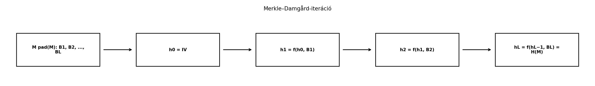

A A hash-függvény és biztonsági tulajdonságai alfejezetben a hash-függvényt úgy definiáltuk, mint leképezést tetszőleges hosszú üzenetről rögzített hosszú lenyomatra. A gyakorlatban egy ilyen függvényt úgy akarunk implementálni, hogy ne kelljen a teljes bemenetet egyszerre megjegyezni, és a memóriahasználat független legyen az üzenet hosszától. A Merkle–Damgård-szerkezet erre ad általános, jól elemezhető sablont: az üzenetet rögzített méretű blokkokra tördeljük, és egy rögzített méretű belső állapotot blokkonként frissítünk.
Ugyanennek a szerkezetnek van egy híres következménye is: ha egy
„naiv” üzenethitelesítő kódot úgy készítünk, hogy
H(kulcs || üzenet) értéket számolunk, akkor a támadó a
kulcs ismerete nélkül is érvényes MAC-címkét tud hamisítani egy
meghosszabbított üzenethez. Ezt hosszkiterjesztéses támadásnak nevezzük,
és ez konkrét webes API-kban is előfordult.
A Merkle–Damgård-hash egy láncot alkot. A bemenetből kitöltött
blokkok sorozata lesz, a rögzített IV kezdőállapotból pedig
minden blokk egy-egy tömörítő lépést hajt végre:

A lényeg az, hogy a lenyomat nem más, mint a lánc utolsó állapota. A támadó ezért, ha egyszer ismeri a lánc egy belső állapotát, onnan „tovább tudja fűzni” a hash számítását anélkül, hogy a korábbi bemenetet ismerné.
Definíció (tömörítőfüggvény). Legyen ahol a belső állapot hossza bitben, pedig a blokkhossz bitekben. A tömörítőfüggvény tehát egy bites állapotból és egy bites blokkból készít egy új bites állapotot. A hash szempontjából akkor hasznos, ha ütközésellenálló: nehéz olyan párt találni, amelyre
Definíció (Merkle–Damgård-szerkezet). Rögzített kezdőállapot és tömörítőfüggvény esetén a konstrukció a következő:
pad(M)
bitsorozat egész számú
bites blokkból álljon: pad(M)=B_1\|B_2\|\cdots\|B_L.Definíció (MD-erősítés, hosszkódolás). Az MD-erősítés olyan kitöltés, amely az üzenet hosszát is kódolja. Például SHA-256-ban:
0x80 értékű bitet/bájtot,0x00 bájtot, hogy az így kapott hossz 64 bájttal
osztva 56 maradékot adjon,Az elnevezés onnan ered, hogy a hossz beillesztése miatt két különböző üzenet kitöltött képe „nem csúszhat egymásba” úgy, hogy az egyik a másik folytatása legyen.
Példa. SHA-256 blokkhossza 64 bájt. Ha az üzenet
bájt hosszú, akkor az 0x80 hozzáfűzése után
bájtunk van, ami már
,
ezért nulla darab 0x00 bájtra van szükség. Utána jön a 8
bájtos hosszmező, így a kitöltött üzenet
bájt, azaz egyetlen blokk. Ha az üzenet
bájt, akkor az 0x80 után
bájtunk van, és
darab 0x00 bájt kell ahhoz, hogy
legyen. A hosszmezővel együtt a kitöltött üzenet
bájt, vagyis két blokk. Ez a kis példa is mutatja, hogy a kitöltés
hossza ugrálhat, és a hosszmező egyértelművé teszi az eredeti
üzenethosszt.
A gyakorlati Merkle–Damgård-hash-ek tömörítőfüggvényét gyakran blokkrejtjelből építik. A Davies–Meyer-konstrukció: ahol blokkrejtjel, a kulcs szerepét játssza, pedig a rejtjelezendő blokk. A visszacsatolás miatt a függvény még akkor sem invertálható triviálisan, ha invertálható; ezért tekintik jó heurisztikus alapnak ütközésellenálló tömörítéshez. A SHA-256 tömörítőfüggvénye pontosan ilyen: a 64 kör egy SHACAL-2 nevű 256 bites blokkrejtjel, amelynek kulcsa a üzenetblokk (az üzenetütemezés a kulcsütemezés szerepét tölti be), a helyett pedig szavanként mod összeadást használ (lásd a lépést lent).
A Merkle–Damgård-szerkezet legfontosabb elméleti eredménye, hogy az ütközésellenállást „örökli” a tömörítőfüggvénytől.
Tétel (Merkle–Damgård átörökítési tétel). Ha az tömörítőfüggvény ütközésellenálló, és a kitöltés MD-erősítést használ, akkor a fenti Merkle–Damgård-hash is ütközésellenálló.
Bizonyítási terv. Indirekt feltesszük, hogy van , amelyre . Megmutatjuk, hogy ebből készíthető egy -ütközés. Az MD-erősítés miatt vagy az utolsó blokk különbözik, vagy ha az utolsó blokk azonos, akkor van egy korábbi blokk, ahol a két üzenet először eltér; mindkét esetben visszavezetjük a hash-ütközést egy tömörítőfüggvény-ütközésre.
Bizonyítás. Legyen a két kitöltött blokksorozat a hozzájuk tartozó állapotlánc pedig ahol . A feltétel szerint .
1. eset: . Ekkor a két utolsó tömörítési lépés bemenete különbözik, a kimenete viszont azonos, hiszen Így és ütközést ad -re.
2. eset: . Ekkor a hosszkódolás miatt és . Mivel , van olyan , ahol . Válasszuk a legnagyobb ilyen -t. Ekkor minden esetén .
Induljunk hátulról: . Ha , akkor az utolsó lépésben ugyanazzal a blokkal ismét -ütközés. Ha viszont , akkor lépjünk egyel hátrébb. Ugyanezt az érvelést ismételve vagy találunk egy -ütközést valamelyik későbbi lépésben, vagy eljutunk addig, hogy . Ez utóbbi esetben az -edik lépésben és mivel , a bemenetek különbözők. Tehát ismét -ütközést kaptunk. ∎
Megjegyzés. Ez a bizonyítás egy redukció: ha valaki hatékonyan talál -ütközést, akkor ugyanolyan hatékonyan -ütközést is tud találni. Ezért a biztonság visszavezethető a kisebb, fix méretű primitívre.
Továbbvitt eredmény. Ezt az átörökítési tételt hasonlítjuk majd össze a A szivacsszerkezet, a SHA-3 és a BLAKE-család alfejezetben tárgyalt szivacsszerkezettel, amely más módon, de szintén fix méretű belső műveletre vezeti vissza a hash biztonságát.
A SHA-256 a Merkle–Damgård-szerkezet egyik legismertebb példája. Paraméterei: , , tehát az állapot 256 bites (nyolc darab 32 bites szó), egy blokk pedig 64 bájt.
Az üzenetet a fenti módon MD-erősítéssel látjuk el:
0x80, majd 0x00 bájtok, végül a 64 bites
big-endian hossz. Ezután az üzenet 512 bites
blokkokból áll.
A kezdeti állapot nyolc darab 32 bites szóból áll. A szabvány szerint ezek az első nyolc prímszám négyzetgyöke törtrészeinek első 32 bitje (a konkrét hexadecimális értékeket a FIPS 180-4 tartalmazza; itt csak az eredetet emeljük ki).
Minden 512 bites blokkot 16 darab 32 bites szóra bontunk: . Ezután további 48 szót generálunk rekurzívan: Itt és rögzített forgatásos-eltolásos keverőfüggvények.
Egy blokk feldolgozása során az aktuális nyolc szavát változókba másoljuk, majd kört hajtunk végre. A -edik kör két segédértéket számol: majd az állapotot jobbra forgatja: A függvény bitenként választ, a többségi függvény, a pedig rotációkból és XOR-okból áll. A konstansok az első 64 prímszám köbgyöke törtrészeinek első 32 bitjei.
A 64 kör után az új állapot: szavanként. Az összegzés, a forgatásos keverés és a nemlineáris , együtt biztosítja a diffúziót és a konfúziót.
Továbbvitt eredmény. A SHA-256 itt bemutatott
paddingje és blokkfeldolgozása szükséges a Születésnapi támadás, MD5- és SHA-1-ütközések,
hash-alkalmazások alfejezetben tárgyalt ütközési munkához, valamint
a Kulcsszármaztatás: HKDF alfejezetben használt
belső H-műveletek megértéséhez.
A Merkle–Damgård-szerkezet fontos tulajdonsága, hogy a hash-érték egyben a belső állapot is az utolsó blokk feldolgozása után. Ez akkor válik támadhatóvá, ha valaki titkos prefixszel számol hash-t.
Támadás (hosszkiterjesztés). Tegyük fel, hogy egy szolgáltatás a értéket használja MAC-címkeként, ahol titkos kulcs. A támadó ismeri -et és -t, de -t nem. Mivel a feldolgozása utáni belső állapot, a támadó ebből az állapotból folytatni tudja a hash számítását:
pad_orig = pad(ell + |m|).&admin=true.IV-ből, hanem a támadó által ismert
állapotból indítja.Ha a szerver a H(k || m') értéket hasonlítja össze,
akkor a támadó által küldött
érvényes lesz, mert a szerver ugyanezt a láncot számolja: előbb
,
aminek a végállapota
,
majd
.
A támadó tehát anélkül tud hiteles üzenetet hamisítani, hogy a kulcsot
ismerné.
Miért pont a hosszkódolás teszi ezt lehetővé? Nem a hosszkódolás a hiba, hanem a naiv prefix-MAC szerkezet. A hosszkódolás azért kell, hogy a támadó pontosan be tudja illeszteni a kitöltést; enélkül is gyakran működne a támadás, de a szabványos padding megkönnyíti a támadó dolgát. A helyes megoldás az üzenethitelesítő kód, például a HMAC, amelyet a Az üzenethitelesítő kód és az EUF-CMA biztonság és a A HMAC alfejezetek tárgyalnak.
Továbbvitt eredmény. A hosszkiterjesztés a leggyakoribb példa arra, hogy a hash-függvény önmagában nem MAC. Az implementációs hibáknál a API-misuse: a leggyakoribb kriptográfiai programozási hibák alfejezetben ezt mint elrettentő mintát ismét elővesszük.
A következő kód egy szándékosan kicsi, 32 bites állapotú és 8 bájtos blokkméretű Merkle–Damgård-játékot valósít meg. A cél kizárólag a hosszkiterjesztés szerkezetének bemutatása.
# OKTATÁSI CÉLRA – NEM ÉLES HASZNÁLATRA
import struct
BLOCK = 8
MASK = (1 << 32) - 1
IV = 0x243F6A88
def ror32(x, n):
return ((x >> n) | (x << (32 - n))) & MASK
def toy_compress(state, block):
hi = int.from_bytes(block[:4], "big")
lo = int.from_bytes(block[4:], "big")
x = (state ^ hi) + (lo | 1)
return (ror32(x, 7) + state * 0x9E3779B9) & MASK
def pad_suffix(total_len):
# MD-erősítés a toy hash-hoz: 0x80, nullák, majd 64 bites hossz
pad = b"\x80"
pad += b"\x00" * ((-(total_len + 1)) % BLOCK)
return pad + total_len.to_bytes(8, "big")
def toy_hash(msg, state=IV):
data = msg + pad_suffix(len(msg))
for i in range(0, len(data), BLOCK):
state = toy_compress(state, data[i:i+BLOCK])
return state
def toy_process(state, suffix, prefix_len):
# A hash-t egy ismert belső állapotból folytatja
total_len = prefix_len + len(suffix)
data = suffix + pad_suffix(total_len)
for i in range(0, len(data), BLOCK):
state = toy_compress(state, data[i:i+BLOCK])
return state
secret = b"SECRET" # a támadó csak a hosszát ismeri
m = b"user=alice"
key_len = len(secret)
legit = toy_hash(secret + m)
orig_pad = pad_suffix(key_len + len(m))
x = b"&admin=true"
prefix_len = key_len + len(m) + len(orig_pad)
forged_msg = m + orig_pad + x
forged_tag = toy_process(legit, x, prefix_len)
print(f"legit tag : {legit:08x}")
print(f"forged tag: {forged_tag:08x}")
print(f"matches : {forged_tag == toy_hash(secret + forged_msg)}")
print(" ".join(f"{b:02x}" for b in forged_msg))legit tag : 2bae3170
forged tag: c712995d
matches : True
75 73 65 72 3d 61 6c 69 63 65 80 00 00 00 00 00 00 00 00 00 00 00 00 00 00 10 26 61 64 6d 69 6e 3d 74 72 75 65A kód determinisztikus (rögzített IV, kulcs és üzenet), ezért a
címkék pontosan ezek (Python 3.14.4-gyel futtatva); a lényeg a
matches: True. A kimenetben jól látszik a
user=alice utáni 0x80, a nulla kitöltés, a
hosszmező 00 00 00 00 00 00 00 10 (16 bájt =
SECRET + user=alice; a toy hash az egyszerűség
kedvéért bájtban kódolja a hosszt, a SHA-256 bitben), majd a támadó
által hozzáfűzött &admin=true.
A hosszkiterjesztés nem csak elméleti hiba. A Flickr API-aláírásának 2009 körül nyilvánosságra került gyengesége éppen ehhez hasonló konstrukcióból fakadt: a szolgáltatás a titkos kulcsot egyszerűen az üzenet elé fűzte, majd hash-t számolt. A támadó a rögzített paraméterek után további paramétereket tudott beszúrni, és így a szerver által elfogadott hiteles kérést hamisíthatott. A pontos érintett verziók és időpontok ellenőrzést igényelnek, de a tanulság állandó: a hash önmagában nem titkosító és nem is hitelesítő primitív.
A modern gyakorlat ezért a HMAC-ot vagy dedikált AEAD-ot használja ott, ahol kulcsolt hitelesítésre van szükség. A Flickr-incidenshez hasonló hibák gyakran azért maradnak sokáig észrevétlenek, mert a normál működés során minden jól néz ki; a támadó viszont a dokumentált API-ból könnyen kitalálja az üzenetszerkezetet.
H(k || m) mint MAC. Ez az alfejezet
fő ellenpéldája. A támadó hosszkiterjesztéssel érvényes címkét
készíthet. Helyes gyakorlat HMAC, például
HMAC-SHA256.
H(m || k) mint MAC. Ez nem ugyanazt
a hosszkiterjesztést teszi lehetővé, de önmagában szintén nem
bizonyítottan biztonságos MAC, és más strukturális támadások érhetik. Ne
használjunk kézzel összefűzött kulcsot, hanem célzottan tervezett
MAC-ot.
A padding hosszmezőjének elhagyása. Ha egy saját
MD-implementáció csak 0x80-at és nullákat fűz az üzenethez,
de a hosszt nem kódolja, akkor az egyértelműségi tulajdonság sérül. Ez
ütközéskereséshez vezethet akkor is, ha a tömörítőfüggvény egyébként
erős.
SHA-256 használata jelszótárolásra. A SHA-256 gyors és nem memóriaigényes, ezért a jelszavak elleni brute-force támadást alig lassítja. Jelszótároláshoz sózott, memóriaigényes KDF, például Argon2 vagy scrypt való.
„Ha a hash biztonságos, akkor a saját kulcsolt
konstrukcióm is az.” A hash ütközésellenállósága nem öröklődik
automatikusan a H(k || m) MAC-ra. A biztonsági célt külön
kell definiálni, és a megfelelő primitívet kell használni.
0x80-ja után?H(k || m) helyett kulcsolt
üzenethitelesítésre?1. feladat (A). Fogalmazd meg a Merkle–Damgård-szerkezet lépéseit, és magyarázd el, mit jelent az MD-erősítés.
2. feladat (A). SHA-256 esetén mennyi a kitöltött üzenet teljes hossza bájtban, ha az eredeti üzenet 100 bájt hosszú? Mennyi nulla bájtot tartalmaz a padding a hosszmező előtt?
3. feladat (B). Legyen , , és tekintsünk egy MD-hash-t hosszkódolással. Adj két különböző, de azonos hosszúságú olyan üzenetet, amelyekre a hash ütközik. Mit mutat ez az átörökítési tétel feltételéről?
4. feladat (B). Egy webes szolgáltatás MAC-ot számol
SHA256(k || m) módon. A támadó elfogta az
m = "from=alice&to=bob" üzenetet és annak
t címkéjét. A kulcs hossza 20 bájt. Írd le lépésről
lépésre, hogyan készít érvényes m' üzenetet és
t' címkét, ha a célja az &amount=100
paraméter hozzáfűzése.
5. feladat (C). Írd le saját szavaiddal az átörökítési tétel bizonyítását, és mutasd meg, hogy a redukció hol használja ki a hosszkódolást.
6. feladat (D). A Python-illusztrációban szereplő
toy_hash ellen hajts végre hosszkiterjesztést. Válaszd meg
a m üzenetet, a secret kulcsot ismert hosszal,
és ellenőrizd, hogy a hamisított címke megegyezik a szerver által a
hamisított üzenetre számolt toy_hash(secret + forged_msg)
értékkel. Magyarázd el, hol van a biztonsági határ a toy és a valódi
SHA-256 között.
Hamis. A tétel iránya: ha a tömörítőfüggvény ütközésellenálló, akkor a belőle épített MD-hash is az. Visszafelé nem igaz.
A 56 bájtos üzenethez 0x80-et fűzve 57 bájtot
kapunk. A cél
,
ezért
nulla bájt kell, majd a 8 bájtos hosszmező.
A hosszmező biztosítja, hogy különböző hosszúságú üzenetek kitöltött reprezentációi ne legyenek egymás folytatásai, és az utolsó blokkjuk különbözzön. Ez kell az átörökítési bizonyításhoz.
A támadó az ismert címkét használja kezdőállapotként; ez a blokkjainak feldolgozása utáni belső állapot.
A helyes primitív a HMAC, például
HMAC-SHA256.
A Merkle–Damgård-szerkezet egy IV kezdőállapotból indul,
az üzenetet MD-erősítéssel blokkokra bontja, majd minden blokkal
frissíti az állapotot:
.
A hash-érték
.
Az MD-erősítés olyan egyértelmű kitöltés, amely a hosszt is tartalmazza,
így különböző üzenetek kitöltött képei nem lehetnek egymás
folytatásai.
100 bájtos üzenet esetén 0x80 után 101 bájtunk van.
SHA-256 célja, hogy a hosszmező előtti rész 56 maradékot adjon modulo
64. Mivel
,
nulla bájt szükséges. A hosszmezővel együtt a teljes kitöltött hossz
bájt.
Legyen két 32 bites blokk. Az és üzenetek azonos hosszúságúak, tehát paddingjük azonos. A kitöltés után mindkét üzenetet ugyanazok a padding-blokkok követik (, köztük a hosszblokk), ezért ami ugyanaz, mert az XOR kommutatív. Ezért van ütközés. A példa azt mutatja, hogy az átörökítési tétel feltétele ( ütközésellenállósága) nem hagyható el: az MD-erősítés egyedül nem ad ütközésellenállást.
pad_orig = 0x80, 18 nullabájt, majd a
hosszmező 00 00 00 00 00 00 01 28 (37·8 = 296 bit);
összesen 27 bájt, így
pontosan 64 bájt.m' = m || pad_orig || "&amount=100"
üzenetet.00 00 00 00 00 00 02 58) számol.t belső állapotból indítva
feldolgozza "&amount=100" || új_pad blokkjait, és így
kapja t'-t.SHA256(k || m') értéket számol, ami
megegyezik t'-vel.Az indirekt feltevés szerint . Ha az utolsó blokkok különböznek, azonnal tömörítőfüggvény-ütközést kapunk, mert a kimenetek azonosak. Ha az utolsó blokkok megegyeznek, akkor a hosszkódolás miatt az eredeti hosszok egyenlők, ezért a blokkok száma is. Ekkor hátulról visszafelé haladva vagy találunk ütközést valamelyik későbbi lépésben, vagy eljutunk a legnagyobb indexű különböző blokkig, ahol a bemenetek különböznek, a kimenetek viszont azonosak. A hosszkódolás az utolsó blokkok egyenlősége esetén garantálja az egyenlő hosszúságot, tehát azt, hogy a visszafelé haladás értelmes.
A Python-illusztrációban a toy_process függvény éppen a
hosszkiterjesztést valósítja meg. A matches: True igazolja,
hogy a hamisított címke megegyezik a szerver által számolttal. A toy
hash állapota csak 32 bites, a blokkja 8 bájt, és a tömörítőfüggvénye
szándékosan gyenge; ezért ütközést is könnyen lehetne találni. A valódi
SHA-256 állapota 256 bites, blokkja 512 bites, és a tömörítőfüggvénye
erős kriptográfiai tulajdonságokkal rendelkezik, de a hosszkiterjesztés
szerkezeti tulajdonsága ugyanígy fennáll.
A Merkle–Damgård-szerkezet a tetszőleges hosszú üzenetek hash-elését
visszavezeti egy rögzített hosszúságú tömörítőfüggvényre. A bemenetet
MD-erősítéssel blokkokra bontjuk, majd az IV
kezdőállapotból blokkonként frissítjük az állapotot. Az átörökítési
tétel pontosan kimondja: ha az
tömörítőfüggvény ütközésellenálló, akkor a belőle épített
Merkle–Damgård-hash is az. A bizonyítás a hash-ütközést visszavezeti egy
-ütközésre,
felhasználva, hogy a hosszkódoló padding egyértelművé teszi az utolsó
blokkot. A SHA-256 ezt a szerkezetet használja 512 bites blokkokkal, 256
bites állapottal, 64 körrel, üzenetütemezéssel, rotációkkal és
nemlineáris választó/többségi függvényekkel. Ugyanez a szerkezet teszi
lehetővé a hosszkiterjesztéses támadást a H(k || m) MAC
ellen: a támadó az ismert hash-értéket mint belső állapotot folytatja,
és a kulcs ismerete nélkül hiteles meghosszabbított üzenethez készít
címkét. Ezért kulcsolt hitelesítésre HMAC-ot vagy AEAD-ot kell
használni. A hosszkiterjesztésre a A HMAC és az
API-misuse: a leggyakoribb kriptográfiai
programozási hibák alfejezetben visszatérünk; a
Merkle–Damgård-szerkezet a A szivacsszerkezet, a
SHA-3 és a BLAKE-család összehasonlítás alapja.
Ez az alfejezet a klasszikus Merkle–Damgård-konstrukció és a SHA-256 általánosan ismert leírása alapján készült. A SHA-256 pontos konstansait és lépéseit a FIPS 180-4 specifikáció rögzíti; az itt megadott szerkezeti leírás oktatási összefoglaló, nem szabványszöveg. A Flickr-api hibájának évszáma és pontos érintett verziója ellenőrzést igényel. A Python-kód szándékos játékimplementáció, nem éles használatra való.